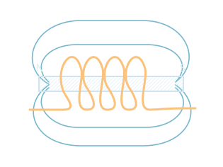

NO / ELLÄRA & MAGNETISM
El- och magnetismkrysset
Från slutna kretsar till magnetfält, motorer och generatorer.

Gnistkrysset · bara ellära
Rutstorlek
Överblick
Eller skriv hela ordet
Fyll i
Tänd en hjälpbokstav
Kontrollera ordet